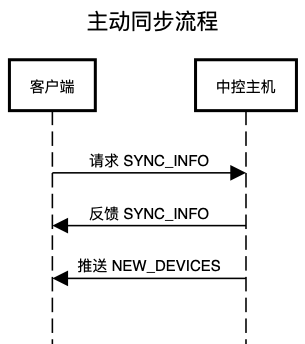
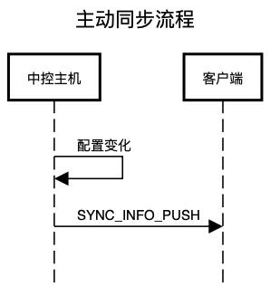
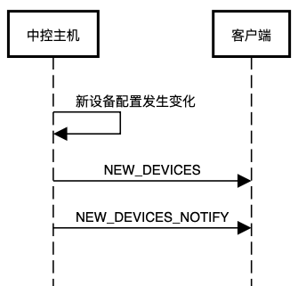

SYNC_INFO 和 SYNC_INFO_PUSH 的报文结构是一样的，所以处理逻辑最好统一。
SYNC_INFO
SYNC_INFO_PUSH
登录主机成功之后，发送 SYNC_INFO 请求，主动向中控同步数据，此时中控返回同步数据后，直接全量更新进本地数据库。

主机内配置发生变化时，主动向客户端发送 SYNC_INFO_PUSH 推送，此时客户端需要解析数据，与本地数据库对比，更新本地数据库。

对于新设备的处理需要根据两种情况判断：
是否刚刚进行过同步操作
是否有发现新设备推送 NEW_DEVICES_NOTIFY
NEW_DEVICES_NOTIFY
主动触发同步报文之后，主机除了向客户端返回主机内的同步报文数据，随即还会向客户端额外推送一条新设备数据。
主机内的新设备配置发生变化之后，主机会向客户端推送新设备报文 NEW_DEVICES，同时推送发现新设备报文 NEW_DEVICES_NOTIFY。
NEW_DEVICES

关于:
快速开始:
交互协议:
客户端开发指导:
中控业务:
附录: